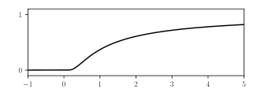

The function \(f\) is the restriction of the holomorphic function \[
f^*: z \in \mathbb{C} \setminus \{i, -i\} \mapsto \frac{1}{1+z^2}.
\]
For any \(x_0 \in \mathbb{R}\), the disk \[
D(x_0) = D(x_0, \sqrt{1+x_0^2})
\] is included in \(\mathbb{C} \setminus \{i, -i\}\). The radius of the disk of convergence of the Taylor expansion of \(f^*\) at \(x_0\) is therefore at least \(\sqrt{1+x_0^2}\); it cannot exceed this threshold: otherwise, the sum \(g(z)\) of its Taylor series would be defined and holomorphic in an open set that contains \(\overline{D}_0\) and therefore bounded on \(D_0\); but \(g\) and \(f^*\) are identical on \(D_0\) where \(f^*\) is unbounded. Finally, as the Taylor expansion of \(f\) at \(x_0\) has the same coefficient as the Taylor expansion of \(f^*\) at \(x_0\), the open interval of convergence of \(f^*\) at \(x_0\) is \[
\left]x_0 - \sqrt{1+ x_0^2}, x_0 + \sqrt{1+x_0^2} \right[.
\]
Show that the function \(f: \mathbb{R} \to \mathbb{C}\) defined by \[
f(x) = \left|
\begin{array}{rl}
e^{-1/x} & \mbox{if } \, x > 0 \\
0 & \mbox{otherwise.}
\end{array}
\right.
\] is smooth but is not analytic.
The graph of a function which is smooth, but not analytic.
Let \(K\) be an compact interval of \(\mathbb{R}\) and \(f: K \to \mathbb{C}\) be a smooth function. Show that \(f\) is analytic if and only if there are positive constants \(\alpha > 0\) and \(r>0\) such that \[
\forall \, x \in K, \forall \, n \in \mathbb{N}, \;
|f^{(n)}(x)| \leq \alpha \, r^n n!
\]
By induction, for any \(x>0\), \(f^{(n)}(x) = g_n(x) e^{-1/x}\) where \(g_n\) is a rational function, defined for \(x>0\) by \[
g_0(x) = 1
\; \wedge \;
\forall \, n \in \mathbb{N},
\; g_{n+1}(x) = g'_n(x) + \frac{g_n(x)}{x^2}.
\] On the other hand, for \(x \leq 0\), the \(n\)-th order derivative (left-derivative at \(x=0\)) of \(f\) at \(x\) is defined and equal to \(0\). To prove that \(f\) is smooth, we now have to prove that the right, \(n\)-th order derivative of \(f\) at \(0\) exists and is equal to its left derivative, that is zero. We may proceed by induction: suppose that \(f^{(n)}(0)\) exists and is zero; then \[
\frac{f^{(n)}(h)-f^{(n)}(0)}{h}
= \frac{1}{h}\int_0^h f^{(n+1)}(x) dx.
\] But for any \(n\), we have \[
\lim_{x \to 0^+} f^{(n+1)}(x) = \lim_{x \to 0^+} g_{n+1}(x) e^{-1/x} = 0,
\] hence the right-hand side of the equation tends to zero when \(h\to 0^+\): the \(n+1\)-th order right derivative of \(f\) exists at \(x=0\) and is equal to zero.
Now, the function \(f\) cannot be analytic: given that its derivatives at \(x=0\) are zero at all order, its Taylor series expansion at the origin is zero. The function \(f\) would be zero in a neighbourhood of the origin, and this property does not hold.
If the function \(f\) is smooth, for any real numbers \(c\) and \(y\) in \(K\), the Taylor formula with integral remainder is applicable at any order \(n\): \[
f(y)
=
\sum_{p=0}^n \frac{f^{(p)}(c)}{p!} (y-c)^p +
\int_c^y \frac{f^{(n+1)}(x)}{n!}(x-c)^n dx.
\] If there exist \(\alpha>0\) and \(r>0\) such that the inequality \[
\forall \, x \in K, \; |f^{(n)}(x)| \leq \alpha \, r^n n!
\] holds, the remainder satisfies \[
\begin{split}
\left|\int_c^y \frac{f^{(n+1)}(x)}{n!}(x-c)^n dx \right|
& \leq
\alpha \, r^{n+1} \frac{(n+1)!}{n!} \left| \int_c^y (x - c)^n \, dx \right| \\
& = \alpha \, (r |y-c|)^{n+1}
\end{split}.
\] Thus, if \(|y-c| < 1/r\), the Taylor expansion of \(f\) at \(y\) centered on \(c\) is convergent. As \(c\) is an arbitrary point of \(I\), the function \(f\) is analytic.
Conversely, if \(f\) is analytic, it has a holomorphic extension – that we may still denote \(f\) – to some open neighbourhood \(U\) of \(K\). The distance \(d\) between \(K\) and \(\mathbb{C} \setminus U\) is positive: for any \(c \in K\), the disk \(D(c,d)\) is included in \(U\). Let \(r\) be a positive radius smaller than \(d\) and \(\alpha\) be an upper bound of \(|f|\) on \(K + \overline{D}(0,r)\); for any natural number \(n\), we have \[
\left|\frac{f^{(n)}(c)}{n!}\right|
=
\left|\frac{1}{i2\pi}\int_{r[\circlearrowleft]+c} \frac{f(z)}{(z-c)^{n+1}} dz \right|
\leq
\alpha
\left(r^{-1}\right)^n
\] which concludes the proof.
In this exercise, \(\mathbb{U}\) is the unit circle centered at the origin: \[
\mathbb{U} = \{z \in \mathbb{C} \; | \; |z| = 1\}.
\] For any radius \(0 \leq r < 1\), we define the annulus \[
A_r = A(0,r, 1/r) = \{z \in \mathbb{C} \; | \; r < |z| <1/r \}
\] (with the convention that \(A_0 = \mathbb{C}^*\)). For any \(0 < \epsilon \leq +\infty\), the notation \(\Omega_{\epsilon}\) refers to the horizontal strip \[
\Omega_{\epsilon} = \{z \in \mathbb{C} \; | \; |\mathrm{Im} \,\, z| < \epsilon\}.
\]
Let \(f:\mathbb{U} \to \mathbb{C}\) be a function with an analytic extension in some open neighbourhood \(U\) of \(\mathbb{U}\).
Prove that there is an annulus \(A_r\) such that \({A}_r \subset U\).
Let \(g: t \in \mathbb{R} \mapsto f(e^{it})\); show that \(g\) is a \(2\pi\)-periodic analytic function.
Conversely, let \(g: t \in \mathbb{R} \to \mathbb{C}\) be a \(2\pi\)-periodic analytic function.
Show there is an analytic extension \(g^*\) of \(g\) on some strip \(\Omega_{\epsilon}\), such that \[
\forall \, z \in \Omega_{\epsilon}, \; g^*(z+2\pi) = g^*(z).
\]
Show that there exist a function \(f:\mathbb{U} \to \mathbb{C}\) with an analytic extension in some open neighbourhood of \(\mathbb{U}\) such that \[
\forall \, t \in \mathbb{R}, \;
g(t)= f(e^{it}).
\]
The set \(\mathbb{U}\) is compact and the set \(\mathbb{C} \setminus U\) is closed; their intersection is empty, thus the distance \(d = d(\mathbb{U}, \mathbb{C} \setminus U)\) is positive (it may be \(+\infty\) if \(U = \mathbb{C}\)). On the other hand, for any \(r<1\), \[
d(\mathbb{U}, \mathbb{C} \setminus A_r) = \min(1- r, 1/r - 1) = 1 - r.
\] Thus, for any \(r\) such that \(1 - r < d\), the annulus \({A}_r\) is a subset of \(U\).
The \(2\pi\)-periodicity of \(g\) is clear: for any \(t\in \mathbb{R}\), \[
g(t + 2\pi) = f(e^{i(t+2\pi)}) = f(e^{it} e^{i2\pi}) = f(e^{it}) = g(t).
\]
The assumption on \(f\) and the result of the previous question provide a holomorphic extension \(f^*:A_r \to \mathbb{C}\) to \(f:\mathbb{U} \to \mathbb{C}\) for some \(r<1\). Now, \[|e^{iz}| = e^{\mathrm{Re} \,\, iz} = e^{-\mathrm{Im} \,\, z},\] thus if \(|\mathrm{Im} \,\, z| < \ln 1/r\), then \(\ln r < -\mathrm{Im} \,\, z < \ln 1/r\) which yields \(r <|e^{iz}|<1/r\). Therefore, if we set \(\epsilon = \ln 1/r > 0\), we have \[
\forall \, z \in \mathbb{C}, \; (z \in \Omega_{\epsilon} \, \Rightarrow \, e^{iz} \in A_r).
\]
Consequently, setting \(g^*(z) = f^*(e^{iz})\) defines a function \(g^*\) on \(\Omega_{\epsilon}\); it is an extension of \(g:\mathbb{R} \to \mathbb{C}\) and it is holomorphic as the composition of holomorphic functions. Therefore, the function \(g:\mathbb{R} \to \mathbb{C}\) is analytic.
Alternate proof. Consider the Laurent series expansion of \(f^*\) in \(A_r\): \[
f^*(z) = \sum_{n = -\infty}^{+\infty} a_n z^n.
\] For any real numbers \(t_0\) and \(t\), we have \[
(e^{it})^n
= e^{int}
= e^{int_0} e^{in(t-t_0)}
= e^{int_0} \sum_{m =0}^{+\infty} \frac{1}{m!} i^m n^m (t-t_0)^m,
\] therefore \[
g(t) = f(e^{it}) = \sum_{n = -\infty}^{+\infty} a_n e^{int_0}
\left[ \sum_{m =0}^{+\infty} \frac{1}{m!} i^m n^m (t-t_0)^m \right].
\] We can change the order of the summation in this double series if \[
\sum_{(m,n) \in \mathbb{N} \times \mathbb{Z}}
\left| a_n e^{int_0}
\frac{1}{m!} i^m n^m (t-t_0)^m
\right| < +\infty
\] The general term of this double series satisfies \[
\left|a_n e^{int_0}
\frac{1}{m!} i^m n^m (t-t_0)^m \right|
\leq |a_n| \frac{1}{m!}|n|^m |t-t_0|^m
\] hence the sum is bounded by \[
\sum_{n=-\infty}^{+\infty} |a_n| (e^{|t-t_0|})^{|n|}
\leq
\sum_{n=-\infty}^{+\infty} |a_n| (e^{t-t_0})^{n}
+
\sum_{n=-\infty}^{+\infty} |a_n| (e^{-(t-t_0)})^{n}.
\] The Laurent series expansion of \(f^*\) is absolutely convergent in \(A_r\), hence the sums in the right-hand side of this inequality are finite if \[
r < e^{t-t_0} < 1/r \; \mbox{ and } \; r < e^{-(t-t_0)} < 1/r
\] that is if \(|t-t_0| < \epsilon = \ln 1/r\). After the change in the order of the summation, we end up with: \[
\forall \, t \in \mathbb{R}, \;
|t - t_0| < \epsilon \; \Rightarrow \; g(t) = \sum_{m = 0}^{+\infty}
b_m
(t-t_0)^m
\] where \[
b_m = \left[ \sum_{n =-\infty}^{+\infty} a_n e^{int_0} \frac{1}{m!} i^m n^m \right],
\] hence the function \(g\) is analytic.
The function \(g\) is analytic; let \(g^{0}\) be an analytic extension of \(g\) in some open neighbourhood \(\Omega\) of \(\mathbb{R}\). However, if the distance between \(\mathbb{R}\) and \(\mathbb{C} \setminus \Omega\) is equal to zero – it may happen as both sets but neither of them is compact – then \(\Omega\) contains no strip \(\Omega_{\epsilon}\).
Let’s build a new analytic extension \(g^*\) on such a strip from \(g^0\). First, the set \(\Omega\) contains some open tubular neighbourhood \(V_{\epsilon}\) of \([0,2\pi]\) for any \(\epsilon > 0\) small enough: \[
V_{\epsilon} = \{z \in \mathbb{C} \; | \; d(z, [0,2\pi]) < \epsilon\} \subset \Omega.
\] Indeed, \([0,2\pi]\) is compact, \(\mathbb{C} \setminus \Omega\) is closed and their intersection is empty, hence \(d(\mathbb{C} \setminus \Omega, [0,2\pi]) > 0\); any \(\epsilon\) smaller than (or equal to) this distance is admissible.
Consider the function \(g^*\) defined on \(\Omega_{\epsilon}\) by \[
g^*(z) =
g^0(z+2\pi k) \; \mbox{ if } \; k \in \mathbb{Z} \; \mbox{ and } \; z + 2\pi k \in V_{\epsilon}.
\] It is plain that \(g^*\) is analytic and extends \(g\) to \(\Omega_{\epsilon}\); by construction it also satisfies the property \[
\forall \, z \in \Omega_{\epsilon}, \; g^*(z+2\pi) = g^*(z).
\] The only point to check is that this definition is unambiguous, as we may have for some \(z\) several integers \(k\) and \(\ell\) such that \(z_k = z + 2\pi k \in V_{\epsilon}\) and \(z_{\ell} = z + 2\pi \ell \in V_{\epsilon}\). Assume for example that \(k < \ell\); in this case \(z_k \in D(0,\epsilon)\) and \(\ell = k + 1\), i.e.\(z_{\ell} = z_k + 2\pi\). The functions \[
w \in D(0,\epsilon) \mapsto g^{0}(w) \; \mbox{ and } \; w \in D(0,\epsilon)
\mapsto g^{0}(w+2\pi)
\] are holomorphic and identical on \(\left]-\epsilon,\epsilon\right[\); by the isolated zeros theorem, they are identical on \(D(0,\epsilon)\) (which is connected) and in particular \(g(z_k) = g(z_{\ell})\). The definition of \(g^*\) is actually unambiguous.
To answer the question, we exhibit an analytic function \(f^*: A_r \to \mathbb{C}\) with \(\epsilon = \ln 1/r\) (or equivalently \(r = e^{-\epsilon}\)) such that \[
\forall \, z \in A_r, \; f^*(e^{iz}) = g^*(z).
\] For any \(w \in \mathbb{C}^*\), there is a solution \(z_0\) to the equation \[
e^{iz} = w, \; z \in \mathbb{C}
\] and the other solutionss are \(z_0 + 2\pi k\), for \(k \in \mathbb{Z}\). Additionally, if \(w \in A_r\), then \(z \in \Omega_{\epsilon}\) with \(\epsilon = \ln 1/r\). We may define \(f^*: A_r \to \mathbb{C}\) by \[
f^*(w) = g^{*}(z), \; e^{iz} = w.
\] This definition is unambiguous: two \(z\) that correspond to the same \(w\) differ from a multiple of \(2\pi\), but \(g^*\) is \(2\pi\)-periodic hence the right-hand sides of this definition are equal.
Let’s prove that \(f^*\) is analytic. Let \(w_0\) in \(A_r\) and \(z_0\) such that \(e^{iz_0} = w_0\), the expression \[
\phi(w) = -i \log \frac{w}{w_0} + z_0
\] defines an analytic function \(\phi\) in an neighbourhood of \(w_0\). It satisfies \(e^{i(\phi(w)-z_0)} = w/w_0\), thus \[
e^{i\phi(w)} = w.
\] Consequently, in a neighbourhood of \(w_0\), \[
f^*(w) = g^*(\phi(w))
\] and \(f^*\) is holomorphic – locally everywhere – as a composition of holomorphic functions.